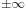
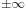
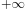
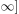
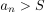
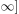
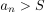

Unbeschränktheit einer bestimmt divergenten Folge
1. Satz
Sei  eine gegen  bestimmt divergente Folge, so ist nach oben / nach unten unbeschränkt (in
eine gegen  bestimmt divergente Folge, so ist nach oben / nach unten unbeschränkt (in  )
)
2. Beweis
o.B.d.A. für bestimmte Divergenz gegen :
Sei  eine obere Schranke, so folgt, dass fast alle
eine obere Schranke, so folgt, dass fast alle  in $[S + 1,  sind, d.h. insbesondere existiert ein 
in $[S + 1,  sind, d.h. insbesondere existiert ein 